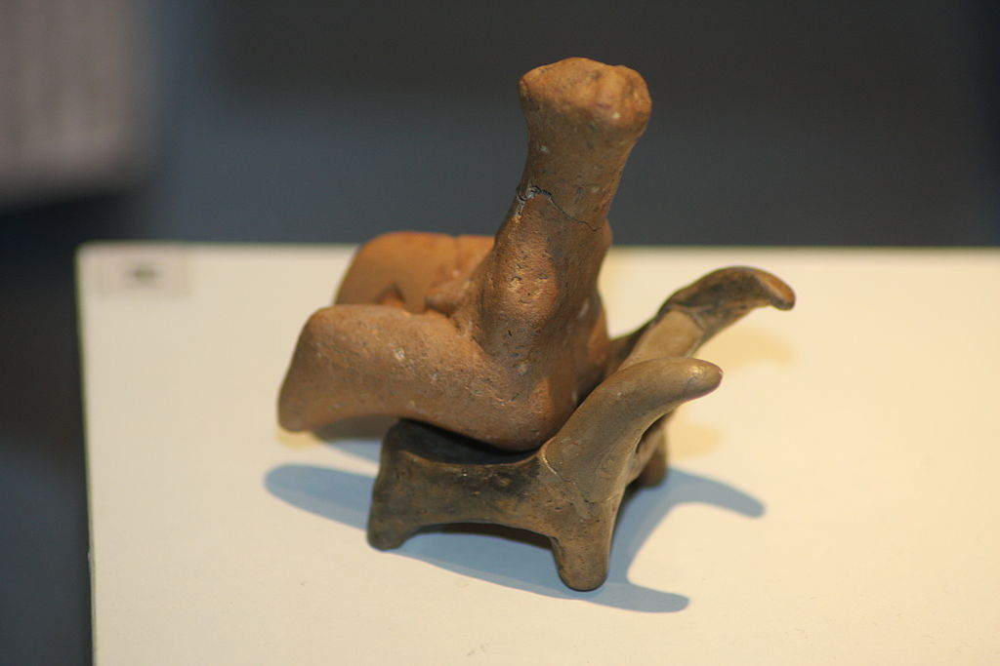
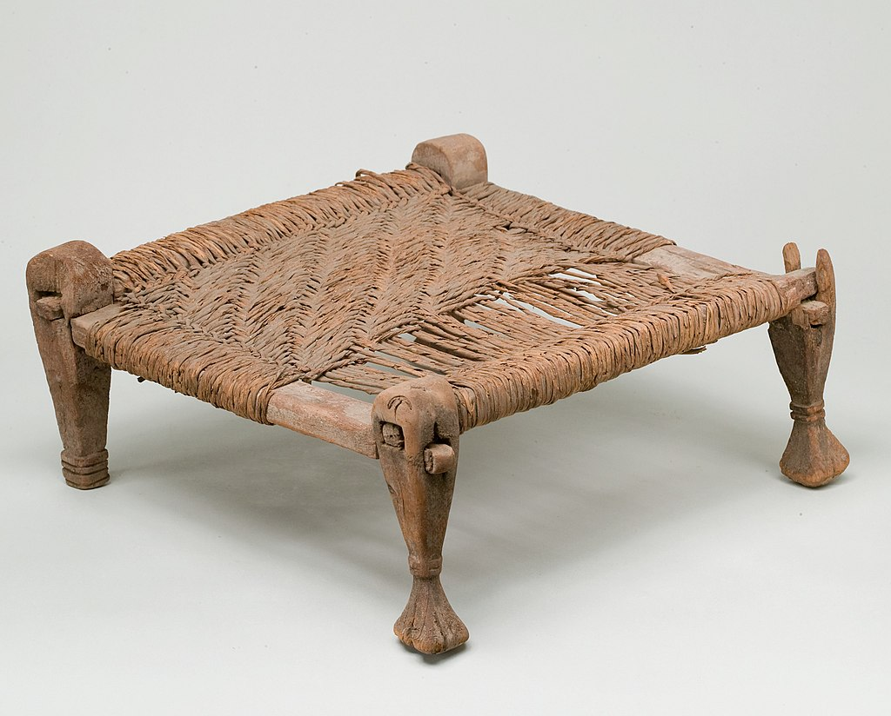
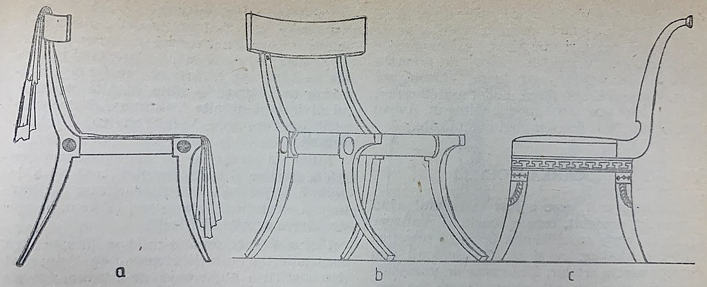
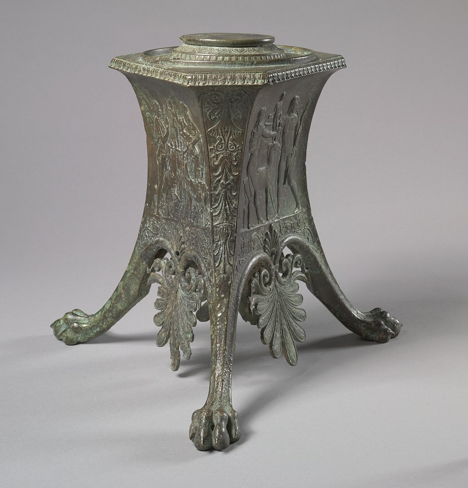
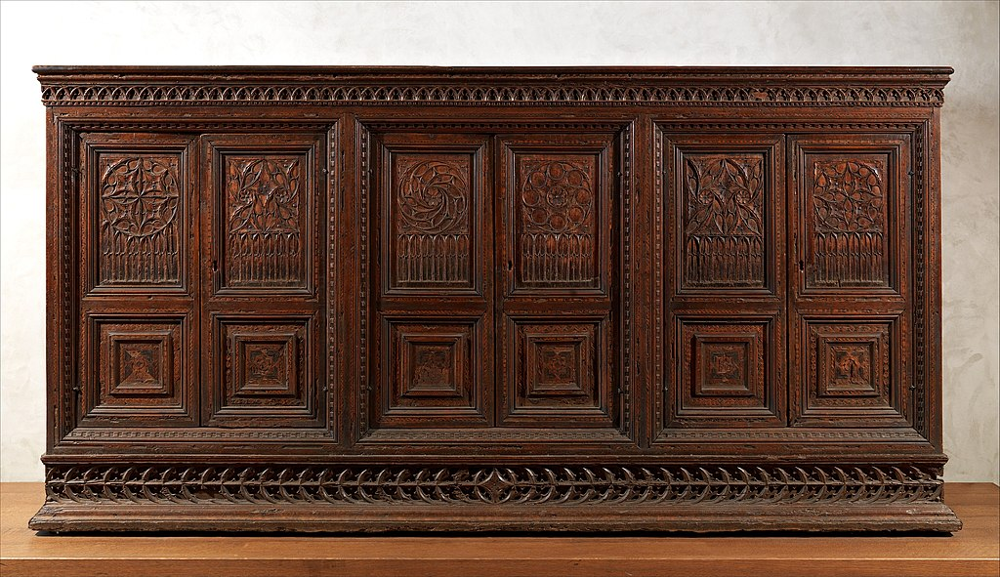
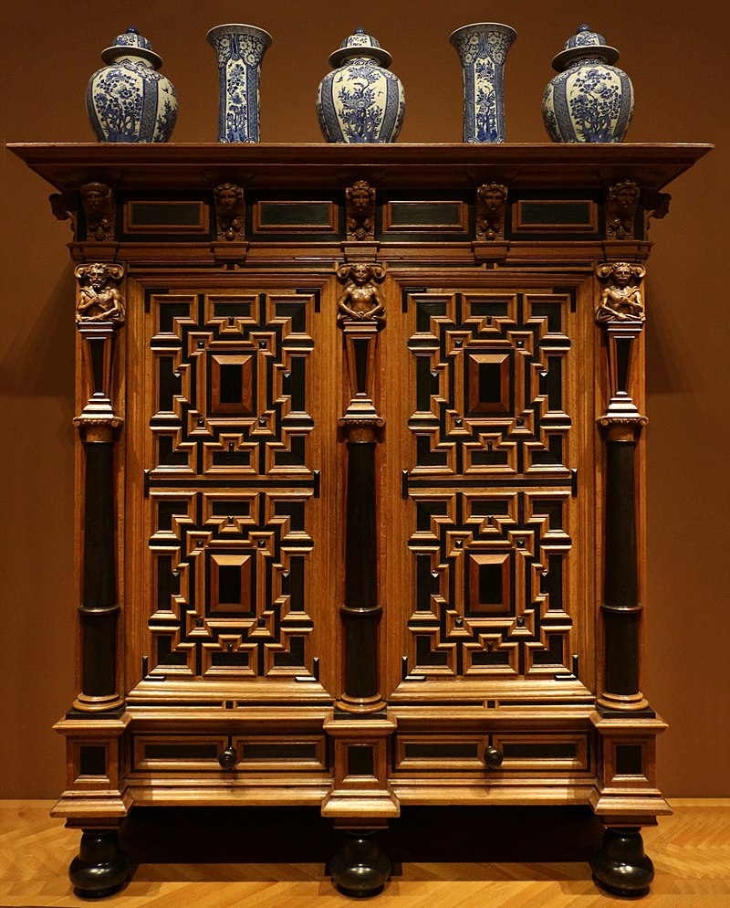
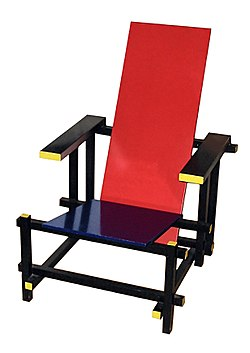

Tech: Now and Then

10 May 2021

An old chair from the 1500's.
Furniture is incredibly important for our day-to-day lives. Need to sit somewhere? Luckily you have a chair to sit in to make that comfortable. Need to sleep? Well, you so happen to have a bed to sleep in that makes that significantly more comfortable than the ground. I could go on and on. But, who came up with the idea of creating a seat? How did we just make something that became much more comfortable than the ground? And how did our advancements over time greatly improve these? Well, that all starts with prehistory from our natural instincts.
A figure sitting in a chair, discovered to be made around 4750-4500 BCE. It was excavated in Romania.
As humans, we have the natural instinct of sitting down when we're tired to rest. This also includes using objects like rocks and stumps, which are thought to be our initial inspirations for our own furniture. It also seems that mossy areas were used as sleeping areas. The earliest evidence for constructed furniture would be the Seated Woman of Catalhoyuk, which features a woman sitting in a chair. It is thought to be created in 6,000-5,500 BCE. The inclusion of the seat makes it seem that chairs were a common thing at the time. The earliest surviving piece of furniture is the stone dresser from Skara Brae, a Neolithic village in Orkney, Scotland. The stone structure appears to be about 5,100-4,500 years old (3,100-2,500 BCE), and it has multiple slots to place things on its inside shelves.
A stool with a woven seat, created with wood and reed around 1,991-1,450 BCE. It currently resides in the Metropolitan Museum of Art.
Civilization began in Ancient Egypt with the discovery and irrigation of land upon the Nile river. Egyptians began constructing buildings and raising cattle to live in the harsh environment. Mortar appeared to be used around 4,000 BCE, which shows that barley and emmer (an early version of wheat) were grown and used. There also seemed to have been reed mats that were lined on the outside of human-dug pits, which kept the barley and emmer from entirely drying out from the desert air. Not much furniture from pre-dynasty Egypt had survived, but First Dynasty tombs show that their furniture skills were quite advanced.
The dynastic period, starting around 3,200 BCE, saw a major advance in furniture design, with many materials such as wood, leather, gold, silver, ivory, and ebony, with the latter four being mostly used for decoration. Wood in Egypt was very poor, so most wood used in furniture in Egypt was outsourced from other civilizations. This forced Egypt to use wood very efficiently, creating many new techniques that still are used to this day. For instance, Egyptians used scarf joints to join two pieces of wood together into a stronger beam, and they used veneers to make the inside of chairs cheap, low quality wood with the outside being expensive, quality wood.
The earliest example of seating furniture used was the stool, which all citizens used from the wealthy to the poorest. All of the seats were usually rectangular, but designs could either have splayed out or straight legs that supported the seat. Full chairs were more often reserved for the wealthy due to the extra wood needed to craft it. Unfortunately, basically no tables survived to this day, making it seem that they were mainly used outside due to their heavy featuring in Egyptian art.
A paper showing multiple illustrations of Greek chairs, with each being notated with a letter.
Most historical knowledge of Greek furniture is from literature, terracotta, sculptures, statuettes, and painted vases, taking place around 1,000 BCE - 500 CE. The main pieces that survived to this day were constructed from metals/stone, like bronze or marble. Wood was the most commonly used material for creating furniture, and like the Egyptians, veneers was the most commonly used technique. They also used dowels and tenons to join their furniture together, showing a major advancement over the craftsmanship of the Egyptians. Some furniture was also made with precious materials like ivory, tortoise shell, glass, gold, or silver. The modern word for throne is taken from the Greek word thronos, which was a seat designed for high-ranking officials.
One common piece of furniture the Greeks created was the kline, which doubled as a bed and sofa for relaxation. There's evidence of mattresses, rugs, and blankets, but there's no evidence for sheets. Greek tables were generally low, with them generally having three legs and being rectangular, trapezoidal, or circular. Many of these tables were used for banquets and religious purposes. Chests were also used to store important goods.
An ancient Roman tripod created around 100 BCE, made out of bronze and turned blue due to oxidization. This currently resides in the Cleveland Museum of Art.
Ancient Roman furniture was based heavily on Greek furniture due to Rome basically just being an upgraded Greece. Greece eventually became a providence of Rome during 146 BCE, which made Rome take over the production and distribution of their furniture, blending the two so deeply together that it's hard to distinguish. Roman furniture was mostly built out of wood, stone, and metal, with marble and limestone being mostly used for outside furniture. Very little wood has survived to this day, but a variety of woods were used (maple, citron, beech, oak, holly). The most commonly used metal for decoration was bronze, which many have survived due to their stronger complexion. Similar to the Greeks, Romans used tenons, dowels, nails, and even glue to join wood together.
An ancient Italian credenza created around 1450 CE, which is a storage space used primarily for storing plates and dishes. Currently in the Metropolitan Museum of Art.
In contrast to most civilizations before, the Middle Ages doesn't have as much furniture that survived to this day due to its mostly wood creation, and most literature doesn't mention anything that stands out. The few pieces of evidence that did survive illustrate the rise of Christianity and its influence, with its usage of pigeons, fish, lambs, and vines. The materials mostly used in these pieces were wood, marble, stone, ivory, and metal. Tables and chairs were also very different due to the amount of places that existed, so each place had a nearly unique style that would be obvious if placed next to one another.
An old Baroque Dutch wardrobe, made around 1625-1650. Currently resides in the Cleveland Museum of Art.
In the 17th century, Europe entered a Baroque period (meaning that there's a scrolling/massive ornament). Many other styles also popped up, for instance Palladianism (angular), Louis Quinze (heavy stylization), and Rococo (basically late Baroque). In the 18th century, most furniture had metal and enamelled decorations that showed the massive wealth of people back then. The 19th century was mostly about reviving old types of styles, like Gothic and Rococo.
A red and blue chair designed by Gerrit Rietveld in 1917. This is obviously very modern, as it looks super uncomfortable and only a rich person with way too much money would have this in their home.
The first three quarters of the 20th century are seen as the development of moderninsm. Many of these modern pieces incorporated laminated wood, plastic, and fiberglass. With the knowledge of environmental issues, a recent movement has taken hold called Ecodesign. This design uses environmentally-friendly designs that are sustainable.